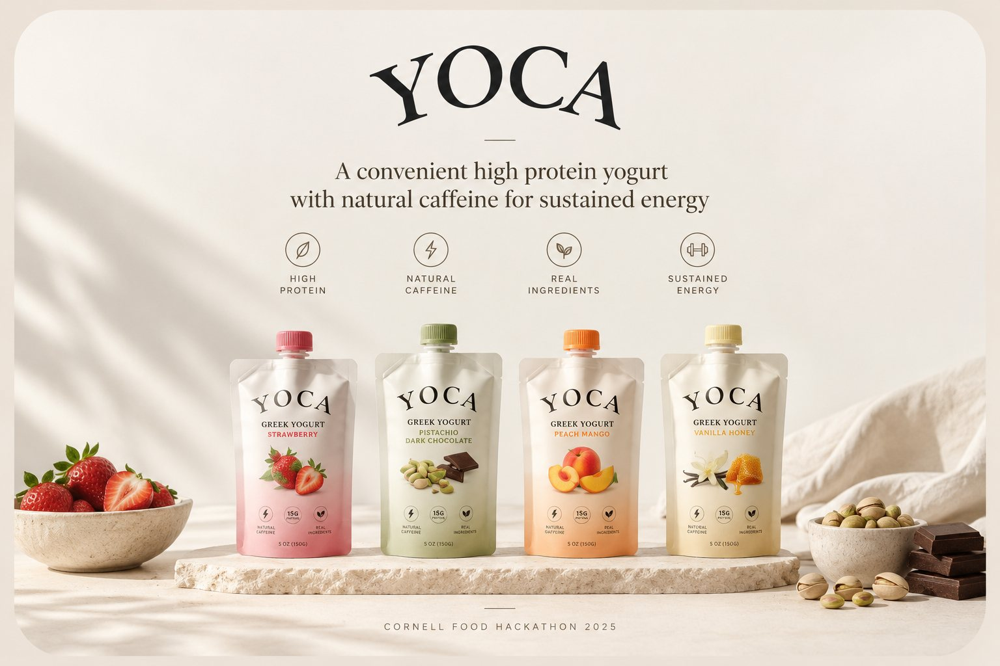

Room III · On making two things one · Brand identity
YOCA
One pouch that replaces a coffee and a protein bar.

The brief
Create a new food product combining dairy and caffeine at the Cornell Food Hackathon 2025.
What I did
I led the concept, branding, and graphic design for YOCA.
01
Starting with the customer
The idea came from an everyday problem. Meet Amanda:
- A 25-year-old business professional.
- No time for meals, so she struggles to hit her protein goals.
- Tired in the mornings and afternoons.
She drinks coffee for energy and grabs a protein bar to stay full. That's two products for one need.
02
The idea
Combine both into one: a caffeinated, high-protein Greek yogurt in a squeezable pouch.
- Caffeine gives the energy boost.
- Protein keeps her full longer.
- The pouch makes it easy to eat on the go.
03
Branding and graphics
- Named the product YOCA (yogurt + caffeine).
- Designed the visual identity and pitch graphics.
- Built four flavors to feel fresh and modern: Strawberry Matcha, Pistachio Dark Chocolate, Vanilla Honey, and Peach Mango.
The solution
YOCA: one pouch that replaces a coffee and a protein bar.
- 20g protein + 100mg caffeine, about one cup of coffee.
- Clean ingredients: Greek yogurt, probiotics, honey, organic caffeine, whey protein, no artificial sugar.
- Sustainable: BPA-free, recyclable pouches.
- Priced to compete: $2.99, between Chobani ($1.79 to $2.29) and Celsius ($2.99 to $3.49).
- The market: about 80,000 realistic customers in years one to three, worth roughly $25M.
Why it works: no other product on the shelf gives you caffeine, natural ingredients, and high protein in one grab-and-go format.